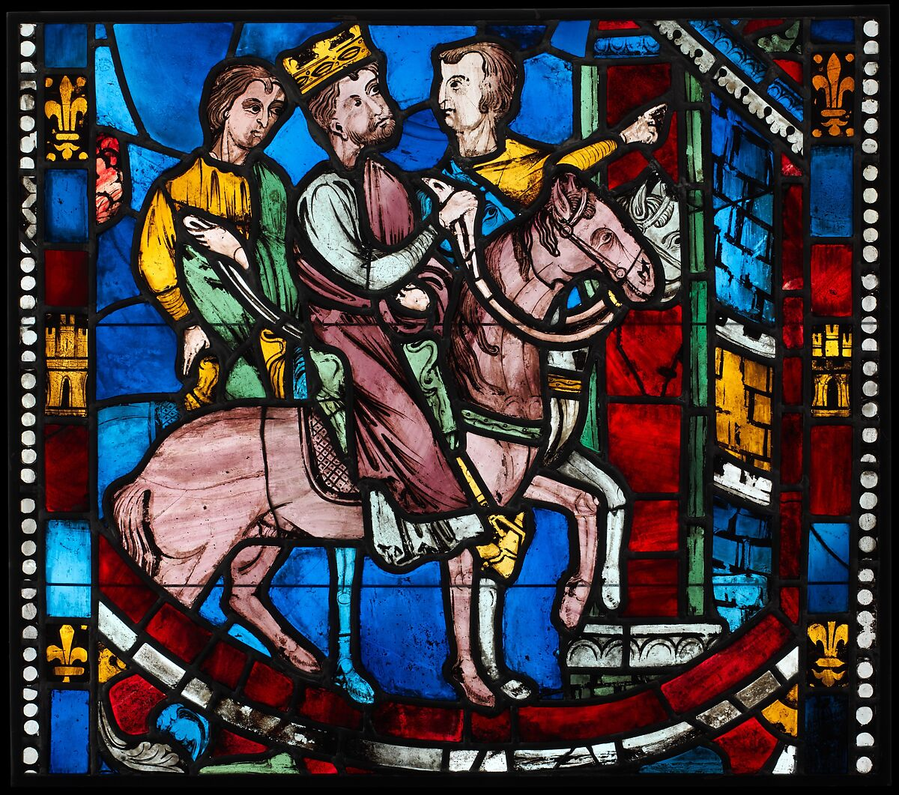

Renaissance Paintings
Early Renaissance (1400-1479)
Beginning in Italy, the Early Renaissance period represents a cultural rebirth, which continues to influence art today. Artists began to build on the classical style, creating a more humanistic and individualistic style of painting. Art was no longer focused on telling solely religious stories, but telling emotional, real, and expressive human stories. Using their new knowledge of math and architecture, they developed new styles that allowed them to create “illusionary realities.”
Plate with the Battle of David and Goliath
Pectoral with Coins and Pseudo-Medallion

Fragment of a Floor Mosaic with a Personification of Ktisis

High Renaissance (1475-1525)
The High Renaissance Period was the peak of the renaissance, with some famous artists you might know making their mark like Leonardo da Vinci, Michelangelo, and Raphael. Building on the Early Renaissance period, they continued to use architectural elements in their art, including the new style of quadrata, or ceiling paintings. This period is best known for bringing beauty back into art.

Title:
Department:
Date:
Id:
Theodosius Arrives at Ephesus, from a Scene from the Legend of the Seven Sleepers of Ephesus
Department:
The Cloisters
Date:
ca. 1200–1210
Id:
469857
Virgin and Child in Majesty

Cuxa Cloister